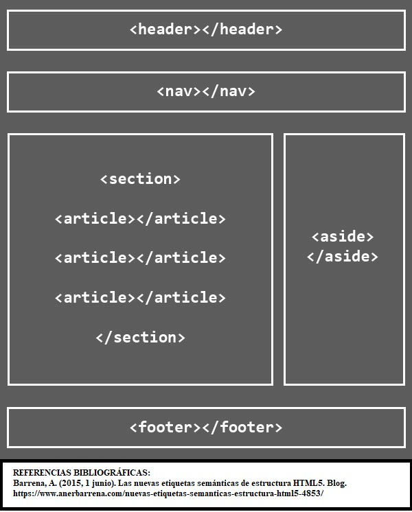

Etiquetas Semanticas
Perteneciente o relativo a la significación de las palabras. Este tipo de etiquetas del lenguaje HTML son aquellas que dan un significado a las partes del documento. Las etiquetas semánticas indican qué es el contenido que contienen, en lugar de como se debe formatear al mostrar el documento HTML. Estas etiquetas, tienen importancia en el marco del HTML y de la composición de un documento web para ayudar a los motores de búsqueda como Google a indexar más correctamente los contenidos de un sitio. Dentro del etiquetado semántico también tenemos varias funciones, pero las principales y elementales son las que sirven para definir el esquema principal del documento, como HEADER, ARTICLE, FOOTER, etc. Generalmente, en cualquier documento tenemos una cabecera, un cuerpo y un pie de página, elementos que definen la estructura. Todas esas etiquetas semánticas nos indican qué es el contenido que engloban y cuál es su relación con el conjunto de elementos del documento HTML.
según Celaya Luna 6 de octubre de 2022 última actualización Las etiquetas semánticas no tienen un estilo predeterminado que el navegador nos vaya a asignar. Es decir, porque HEADER signifique que es una cabecera, el navegador no va en ningún caso a posicionar el elemento en la parte de arriba del documento. Lo mismo con FOOTER, que no lo colocará en la parte de abajo, o ASIDE al lateral. Nosotros mediante CSS, debemos asignar los estilos que queramos se aplique a cada uno de esos elementos del documento HTML. Crea un enlace a otras páginas de internet, archivos o ubicaciones dentro de la misma página, direcciones de correo, o cualquier otra URL.

CSS Grid
Uno de los procesos más problemáticos y frustrantes de CSS, sobre todo para novatos o principiantes, es el proceso de colocar y distribuir los elementos a lo largo de una página. Mecanismos como posicionamiento, floats o elementos en bloque o en línea, suelen ser insuficientes (o muy complejos) para crear un layout o estructuras para páginas web actuales.
El sistema de elementos flexibles Flex es una gran mejora, sin embargo, está orientado a estructuras de una sola dimensión, y puede ser laborioso crear estructuras más complejas, por lo que aún necesitamos algo más potente para estructuras web de varias dimensiones rápidamente. Con el paso del tiempo, muchos frameworks CSS y librerías comenzaron a utilizar un sistema basado en un grid donde se definía una cuadrícula, a la que era posible darle tamaño, posición o colocación, cambiando el nombre de sus clases.
Grid CSS nace de esa necesidad, obteniendo las ventajas de ese sistema grid, añadiéndole numerosas mejoras y características que permiten crear rápidamente cuadrículas flexibles y potentes de forma prácticamente instantánea con una nueva familia de propiedades CSS.
En Grid CSS, la forma principal de definir una cuadrícula es indicar el tamaño de sus filas y sus columnas de forma explícita. Para ello, sólo tenemos que usar las propiedades CSS grid-template-columns y grid-template-rows
Celaya Luna CSS Grid:
CSS en un archivo externo, es un lenguaje para escribir estilos, es el que controla la presentación de los documentos electrónicos HTML y XHTML. Es la mejor forma de separar los contenidos y su presentación es imprescindible para la creación de la creación de páginas web complejas
En este caso, todos los estilos CSS se incluyen en un archivo de tipo CSS que las páginas HTML enlazan mediante la etiqueta. Un archivo de tipo CSS no es más que un archivo simple de texto cuya extensión es .css Se pueden crear todos los archivos CSS que sean necesarios y cada página HTML puede enlazar tantos archivos CSS como necesite.
